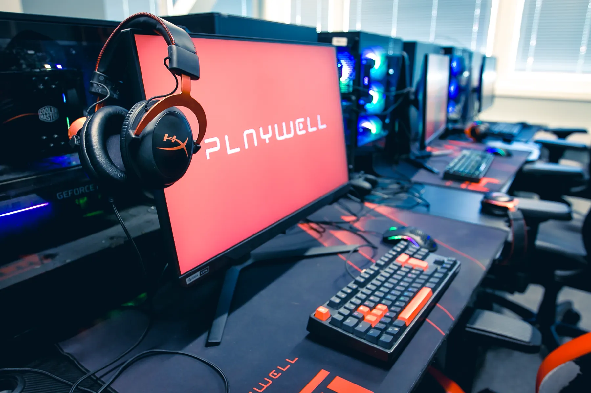
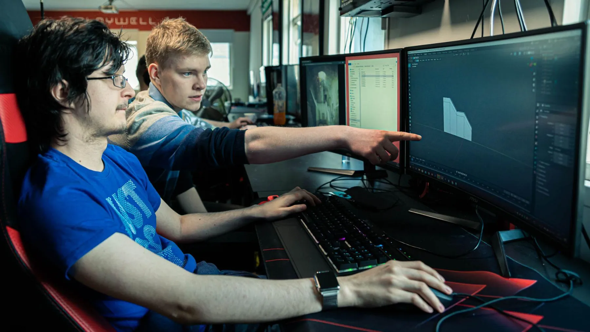
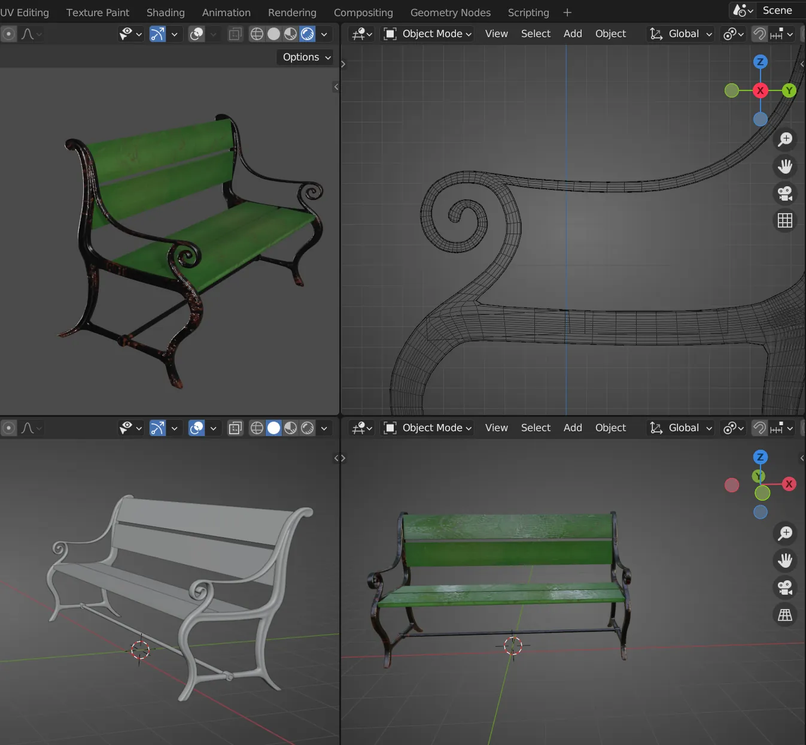
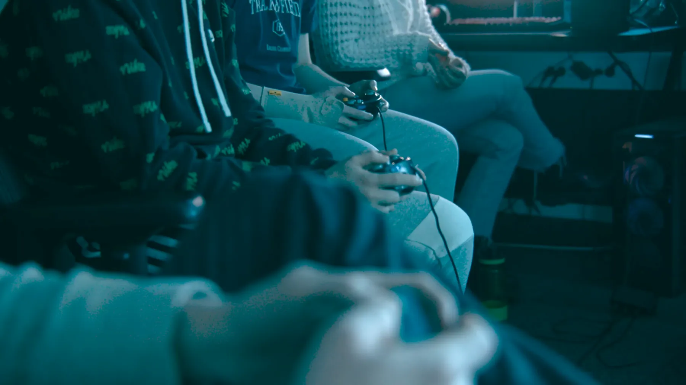
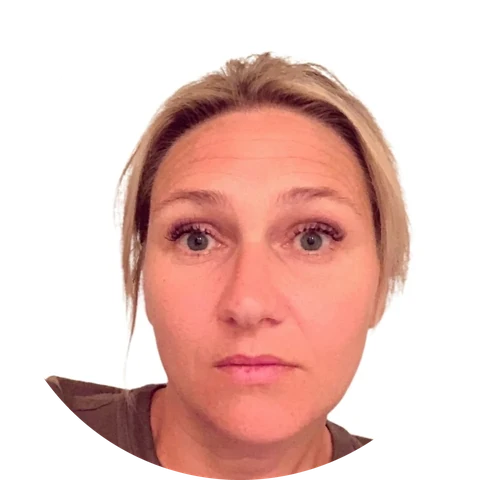

LearnWell til Stavanger
I over ti år har LearnWell gitt elever i videregående skole i Bergen en annen vei inn i læring – på et gamingsenter, med ekte prosjekter og voksne som ser hva de er gode på. Nå vil JobLoop etablere tilbudet i Stavanger.

Hva er LearnWell?
LearnWell er et tilbud for elever i videregående skole som har utbytte av en annen opplæringsarena ved siden av ordinær skole. Det gjelder elever som strever med skolevegring eller høyt fravær, og elever som trenger et pust i bakken og nye omgivelser.
Elevene møter opp én til tre dager i uken på et gamingsenter – et miljø mange av dem allerede kjenner og trives i. Der jobber de med prosjekter innen digital kreativ teknologi: 3D-modellering, koding, animasjon, digital tegning, videoredigering og spillutvikling. Veilederne er tett på hele dagen.
Målet er faglig, sosialt og arbeidsrettet: at eleven får tilbake troen på egne evner, bygger rutiner og finner veien videre til skole, praksis eller jobb.
Slik blir en elev med
-
Praksisavtale med skolen
Deltakelsen avtales direkte mellom elevens skole og JobLoop. Eleven er fortsatt elev ved sin skole.
-
Individuell opplæringsplan
Vi jobber etter elevens opplæringsplan og har tett kontakt med skolen underveis.
-
Felles mål
Skolen, eleven og JobLoop setter faglige, sosiale og arbeidsrettede mål sammen og følger dem opp.



En dag i LearnWell
Dagen er bygget opp som en vanlig arbeidsdag, med faste tider, fokus og fellesskap.
- Oppmøte og morgensamling. Vi går gjennom dagens plan.
- Arbeid med egne prosjekter, med veiledning.
- Felles lunsj – en viktig del av det sosiale miljøet.
- Videre arbeid med prosjektene.
- Vi avslutter dagen med å spille sammen.
Over ti år i Bergen
JobLoop har drevet LearnWell i Bergen i over ti år. Gjennom hele perioden har elever, foresatte og skoler gitt gode tilbakemeldinger. Erfaringen derfra er at ungdom som har falt ut av ordinær undervisning, finner tilbake til læring når de blir møtt på det de er gode på – og får voksne rundt seg som har tid.
Effektene vi ser etter
-
Her og nå
Uke for uke
Tilhørighet, mestring, tro på egne evner og egen fremtid, opplevd egenverdi og sosiale ferdigheter.
-
Kort sikt
Måneder og skoleår
Dokumenterte læringsmål, beståtte fag, fullførte praksisløp og overgang til skole eller jobb.
-
Lang sikt
Etter ett til tre år og senere
Livsmestring, økonomisk selvstendighet, mindre press på velferdstjenestene og en mer inkluderende IT-bransje.
Hvor elevene går videre
- Tilbake i skolen med ny motivasjon
- Arbeidspraksis og arbeidstrening
- Opplæring i bedrift
- Folkehøgskole
- Høyere utdanning
- Lønnet arbeid

«Løsningen er ikke nødvendigvis å ta fra dem PC-en, men å gi dem meningsfulle oppgaver på PC-en.»
«Engasjementet mitt for å forebygge skolefrafall og skolevegring startet med mine egne barn, som ikke fikk den tilretteleggingen de hadde behov for i skolen. Jeg har tre biologiske barn og har i tillegg vært spesialisert fostermor for en ungdom, og alle fire «barna mine» er funkiser. Selv har jeg pedagogisk utdanning og har engasjert meg i styret i Autismeforeningen med interessepolitisk arbeid og veiledning, men det er først og fremst som forelder jeg har stått i disse utfordringene gjennom mange år.
Mange ungdommer som strever med å finne sin plass i det ordinære skoleløpet er gamere og blir kritisert for å «bare sitte hjemme». Skjermbruk og gaming trekkes ofte frem som den store syndebukken bak skolefravær og frafall. Men blant disse ungdommene finnes det utrolig mange dyktige mennesker med ferdigheter samfunnet faktisk trenger. For mine barn, og for mange andre, handler det verken om manglende evner eller vilje til å lære, men om at rammene for læring ikke passer dem. Løsningen er ikke nødvendigvis å ta fra dem PC-en, men å gi dem meningsfulle oppgaver på PC-en.
Her har PlayWell vært helt avgjørende for oss. Alle fire barna mine har deltatt i PlayWell i ulike perioder fra 2016 og frem til i dag. For meg er det særlig verdifullt at tilbudet tar utgangspunkt i ungdommenes interesser og ressurser, fremfor å fokusere ensidig på det de ikke mestrer i skolen. I PlayWell fikk barna mine være i et miljø der de ble møtt med forståelse for hvem de er, samtidig som de fikk mulighet til å bruke og videreutvikle ressursene sine.
Gjennom disse årene har jeg sett hvordan barna mine har fått den individuelle tilretteleggingen, forståelsen og ikke minst det sosiale nettverket de har hatt behov for, helt fra ungdomsskolealder. Det ga dem den tryggheten de trengte for å finne veien videre mot opplæring og arbeid, blant annet gjennom Varegg Media og Gløfe Data VTA.
Det handler ikke bare om enkeltstående tiltak, men om å skape kontinuitet og trygge overganger. Jeg har gjennom mange år lett grundig etter gode tilbud og løsninger for denne gruppen, både som forelder og gjennom mitt interessepolitiske arbeid. Jeg har ennå ikke funnet noe annet som ivaretar hele dette løpet på samme måte.»
I tråd med fylkeskommunens satsing
Rogaland fylkeskommunes handlingsprogram for Regionalplan kompetanse 2026–2028 gjør det til et eget mål å mobilisere unge som står utenfor arbeid og utdanning. Fylkeskommunen vil øke gjennomføringen i videregående opplæring gjennom målrettede overgangstiltak for ungdom i risikogrupper, og fylkestinget har bevilget 4 millioner kroner årlig i 2026 og 2027 til Ungdomspakken for å forebygge utenforskap. Programmet peker også på behovet for oppfølging som er mer individuell enn det skole, Nav og arbeidsgivere kan gi innenfor sine rammer. LearnWell svarer direkte på dette: tilbudet holder elevene knyttet til skolen gjennom en praksisavtale, følger elevens individuelle opplæringsplan og bygger broen videre til praksis, utdanning og arbeid. Det er et overgangstiltak som allerede har virket i over ti år.
Innspill eller spørsmål?
Dersom du har innspill eller spørsmål omkring etablering av LearnWell i Stavanger, ta kontakt:
Endre Jordal
Prosjektleder, JobLoop AS
endre@jobloop.no
Tlf. 924 95 394